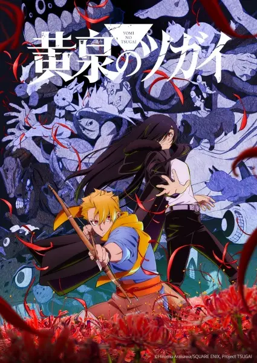

TV · 2026
Цугаи загробного мира
Yomi no Tsugai
★ 7.9424 эп.Цугай загробного мира
Русское описание загружается при открытии карточки.
Открыть в Taytlo
TV · 2026
Yomi no Tsugai
Русское описание загружается при открытии карточки.
Открыть в Taytlo